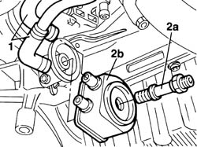

1084C20 radiant mass for engine oil cooling - r + r
- Path
- Procedures > 10 ENGINE > 1084 ENGINE LUBRICATION SYSTEM > 1084C engine oil cooling circuit > 1084C20 radiant mass for engine oil cooling - r + r
- Kind
- repair procedure (removal / refitting; the operation number is the code)
- Applies to
- engines: 1.9 JTD 8V; all production periods
- Interactive page
- https://sloeber94.github.io/elrnDB-a147/en/#/3025075
Applies to: engines: 1.9 JTD 8V; all production periods
 Removing
Removing
 Refitting
Refitting7055B54 under-engine guard - r r
Position a suitable container for recovering the coolant fluid beneath the radiator.
1. Disconnect the engine coolant inlet and outlet pipes from the oil cooling radiator.
2. Unscrew retaining pin (2a) and remove oil cooling radiator (2b).

Applies to: engines: 1.9 JTD 8V; all production periods
Refitting
RemovingPosition the oil cooling radiator on the oil pump front cover.
Tighten the pin securing the oil cooling radiator to torque.
 | Fastening | Component | Ø | Value (daNm) |
|---|---|---|---|---|
- | Connector | OIL COOLING RADIATOR | M20 | 6 |
Connect the engine coolant inlet and outlet pipes to the oil cooling radiator.
Check the amount of coolant present in the engine.
Top if using the same coolant if necessary.